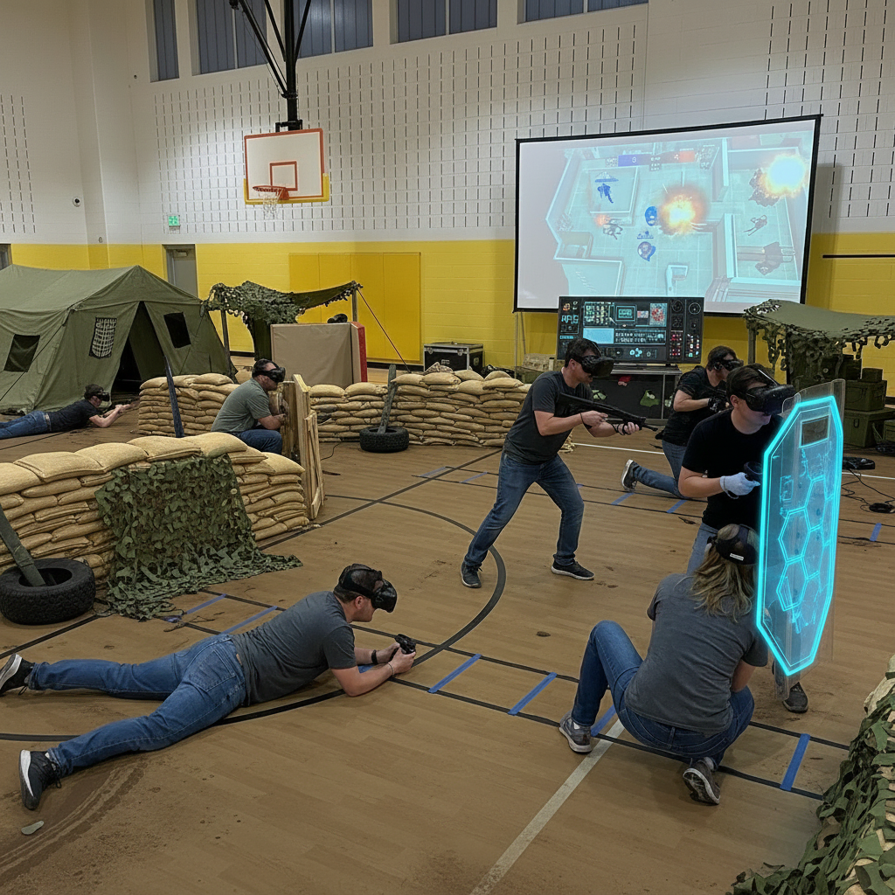

Spatial Ops MR
4v4 csapatjáték, ahol a tornaterem falai digitális akadálypályává alakulnak.
A VR Park Budakeszi nem egy zárt élménycsomag: a futó programjaink a Spatial Ops kevert valóság (MR) csapatjátékra épülnek, a nyílt jeleneteket pedig Figmin és Photon Engine alapokon, Meta Quest 3 headsetre tervezzük. Így a helyszín nem csak egy nyári program, hanem egy könnyen bővíthető, testre szabható platform.
4v4 csapatjáték, ahol a tornaterem falai digitális akadálypályává alakulnak.
Elvarázsolt, felfedezős tájak, amelyek vizuálisan és hangulatban is eltérnek egymástól.
Egyedi, Quest 3-ra optimalizált többjátékos pályák, ha van rá keret.

A futó program a Spatial Ops MR, a vizuális világot Figmin építi, az egyedi Quest 3 pályák pedig Photon Engine alapúak.
Kapcsolatfelvétel
Az űrlapon megadhatja, hogy iskolai, tábori, önkormányzati vagy külsős programszervezői együttműködésről lenne szó. Így célzottan tudunk visszajelezni helyszín, létszám, időpont és a kiválasztott jelenet típusa alapján.
Miért nyílt?
A zárt, „egy méret mindenkire” típusú VR csomagokkal szemben a Spatial Ops + Figmin + Photon kombináció lehetővé teszi, hogy a jelenetek, a nehézség, a tempó és a téma is a célcsoporthoz illeszkedjen.
A jelenetek témája, nehézsége és tempója a csoporthoz igazítható: gyerekeknek, családi napra, céges csapatépítőre vagy sportnapra más-más verzióval.
A Figmin és Photon Engine alapú jelenetek cserélhetők, frissíthetők. Nem ragadunk le egyetlen lezárt csomagnál.
A jelenetek a Meta Quest 3 hardverére vannak hangolva: kényelmes, biztonságos, és önállóan, PC nélkül is futtatható.
Jelenet példák
Ezek a jelenetek a Figmin és Photon Engine eszköztárával, Meta Quest 3 headsetre készülnek. A futó programunk a Spatial Ops kevert valóság (MR) csapatjáték, a nyílt világok vizuális és hangulati hátterét a Figmin, az egyedi, többjátékos Quest 3 pályákat pedig Photon Engine szolgálja ki – ha van rá keret.
Figmin
Lágy, mesés hangulatú, kültéri ihletésű táj: lombsátor, rejtett ösvények, fényjátékok. Kiváló családi napra, ifjúsági programra vagy hangulatalapú ráhangolódásnak.
Figmin + Spatial Ops
A Figmin hangulati világa köré szerveződő, 4v4 felállású, kevert valóság csapatjáték. A liget digitális akadálypályává alakul, a futás, fedezék és kommunikáció áll a középpontban.
Photon Engine (Quest 3)
Photon Engine alapú, Quest 3-ra optimalizált, testre szabott pálya. Saját téma, saját logika, akár szponzori brandfelület is. Csak akkor kerül elő, ha a projektbe van rá büdzsé.
Opcionális plusz réteg
Ha a projektben van rá keret és igény, a játék mellé bioszignál-monitorozás is kapcsolható. A Muse 3 fejpánt az EEG-t és a pulzust, az OpenBCI headband pedig részletesebb agyi jeleket rögzít – kutatási, edukációs vagy edzéscélú felhasználásra.
Fogyasztói kategóriás EEG + PPG. Egyszerűen használható, jó belépő szint a HRV / relaxáció témakörébe.
Részletesebb, kutatás-kompatibilis EEG. Kutatási együttműködéseknél, edukációs projekteknél jöhet szóba.
Hogyan kapcsolódik?
A bioszignál-adatok (pulzus, HRV, EEG sávok) opcionálisan a játék vizuális vagy auditív visszacsatolásába köthetők: például a pulzus emelkedésével a játék színvilága vagy a pálya nehézsége finoman változhat. Erősen ajánlott kutatási / edukációs partnerek bevonása az értelmezéshez.
Előzetes kipróbálás
Ha a döntéshozó vagy a programszervező előbb személyesen is megnézné az élményt, Budakeszi szélén időpontot tudunk biztosítani. A kültéri kipróbálás nyáron is kellemes, és megmutatja, milyen élménnyel tölthető meg a helyi fiatalok naptára.
Következő lépés
Iskolai, tábori, önkormányzati vagy támogatói együttműködés esetén az űrlapon keresztül tudjuk a leggyorsabban pontosítani a helyszínt, létszámot, időpontot és a választott jelenet típusát.